| 項目 | 品名/規格 | 數量 |
|---|---|---|
| 特殊工具 | 油壓板車、5kg鐵塊 | 各 1 |
| 一般工具 | 六角板手組、活動板手、13/30號套筒、電動板手、一字起子 | - |
| 零組件 | 履帶調整桿組 (190050027) | 1 組 |
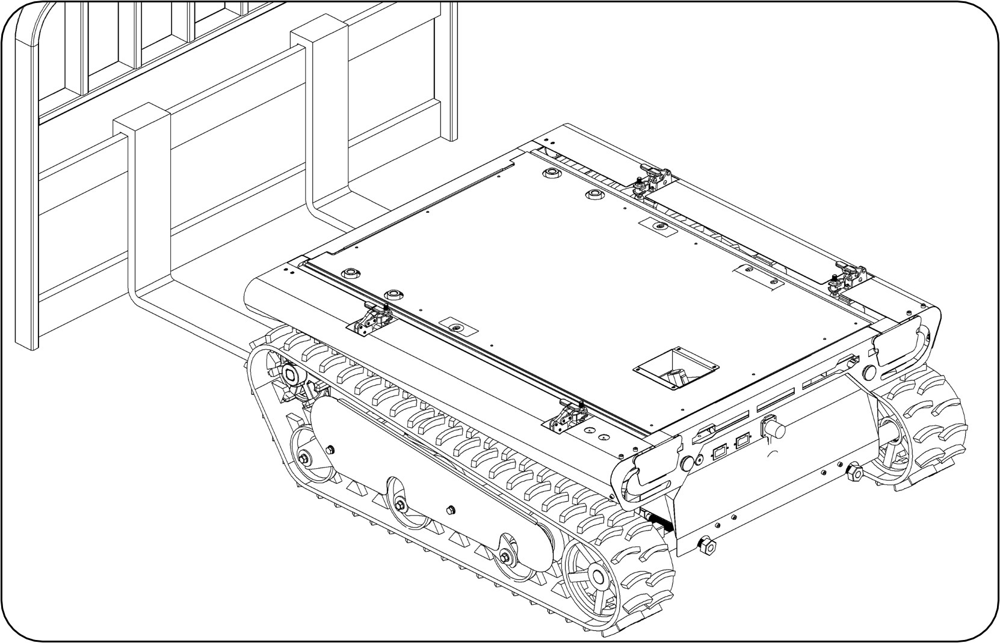
圖 1：板車撐起位置
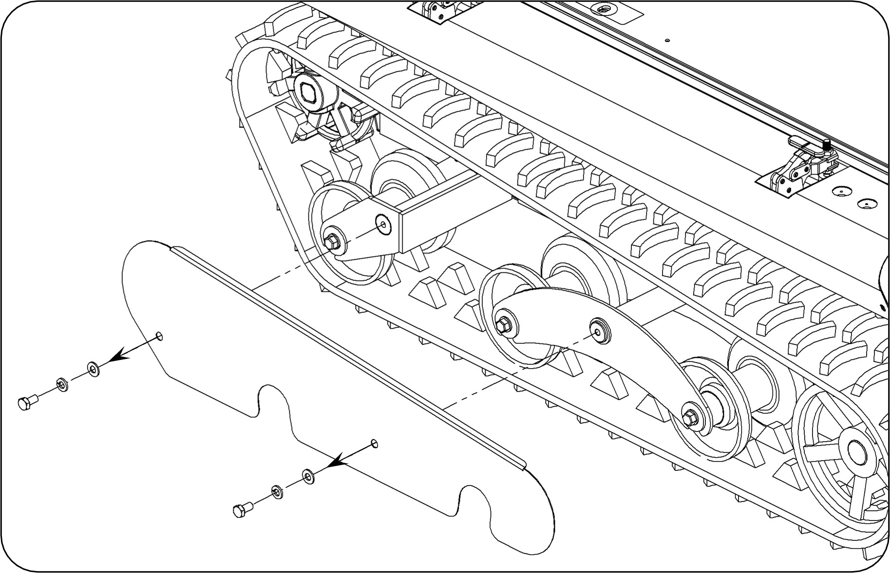
圖 2：側蓋螺絲拆卸
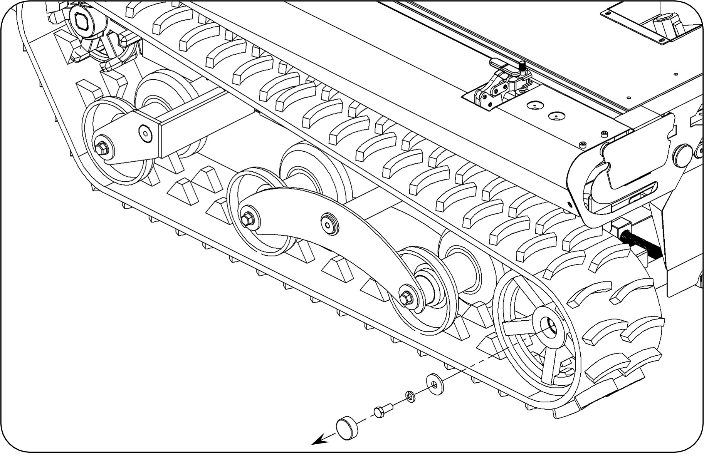
圖 3：後蓋板位置
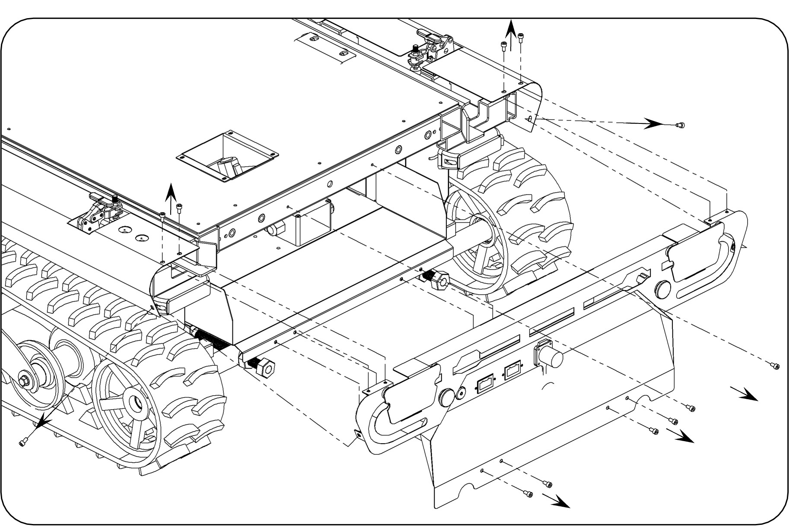
圖 4：飾蓋拆卸
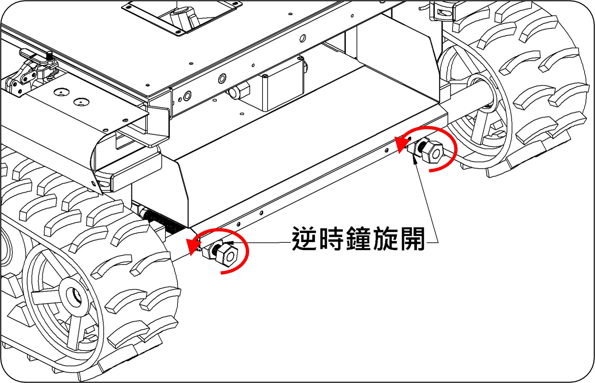
圖 5：固定螺帽鬆開
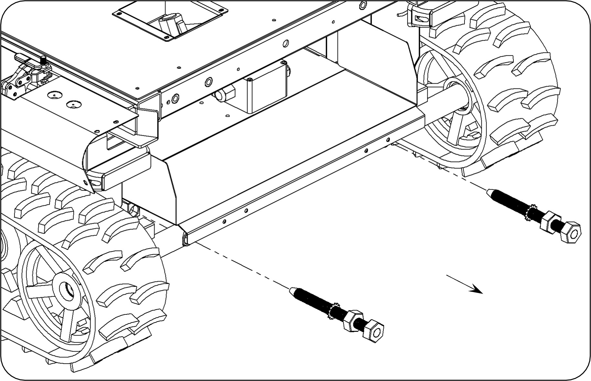
圖 6：螺桿退出
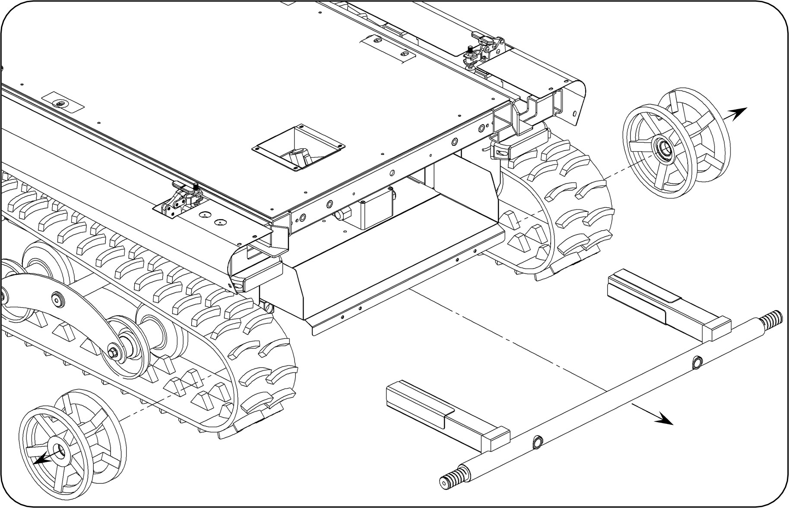
圖 7：30號套筒拆卸
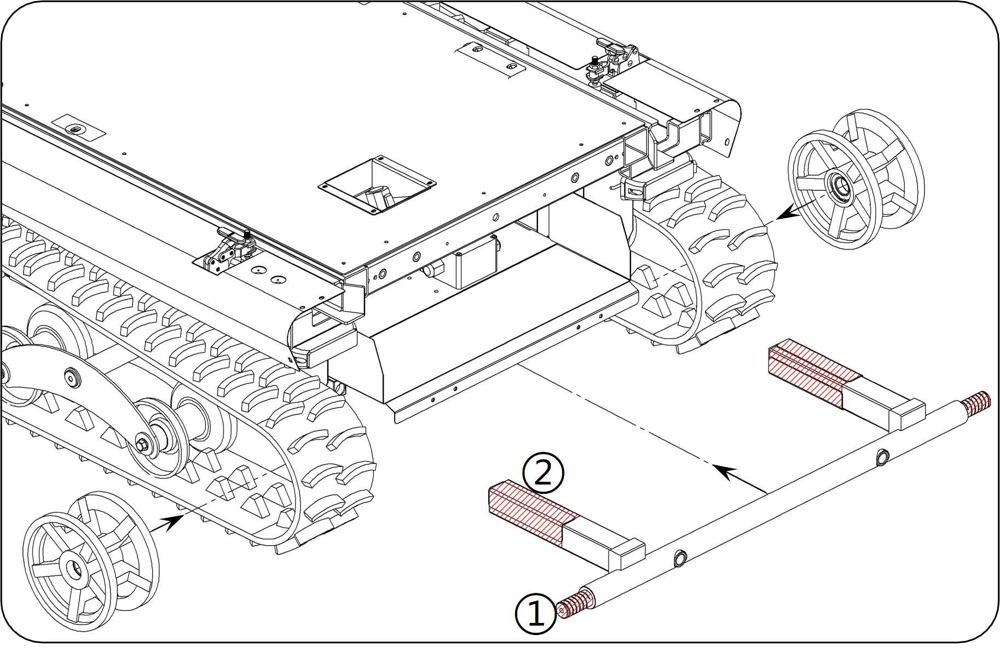
圖 8：取下舊桿件
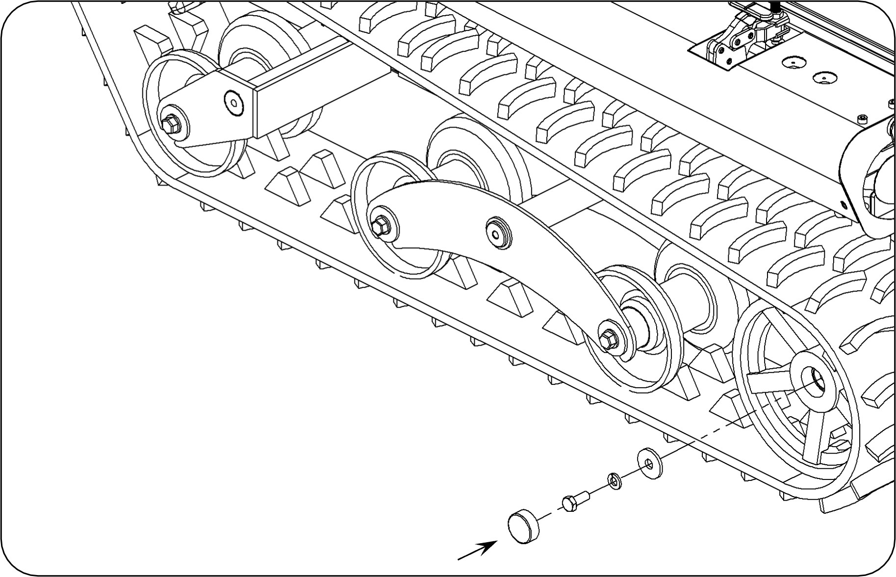
圖 9：更換新品組裝
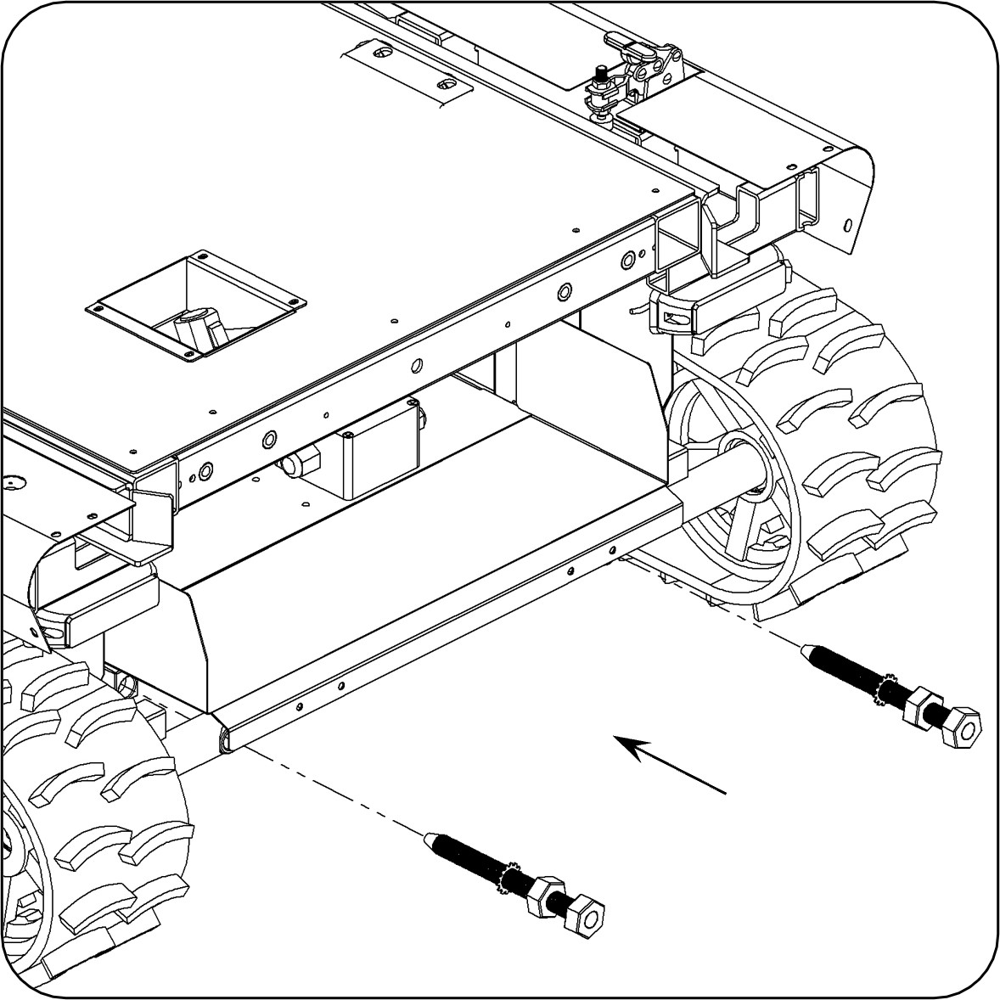
圖 10：轉動調整螺栓
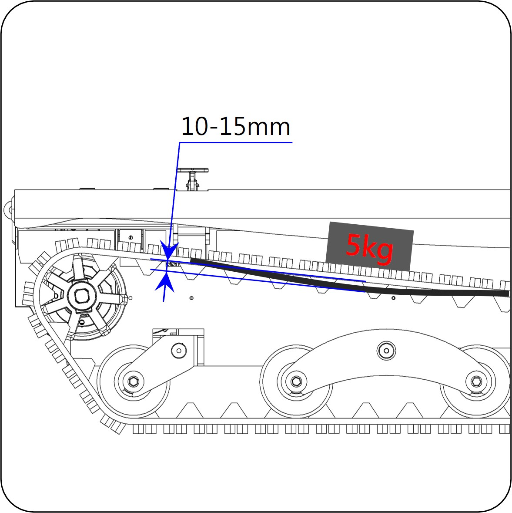
圖 11：放置 5kg 鐵塊
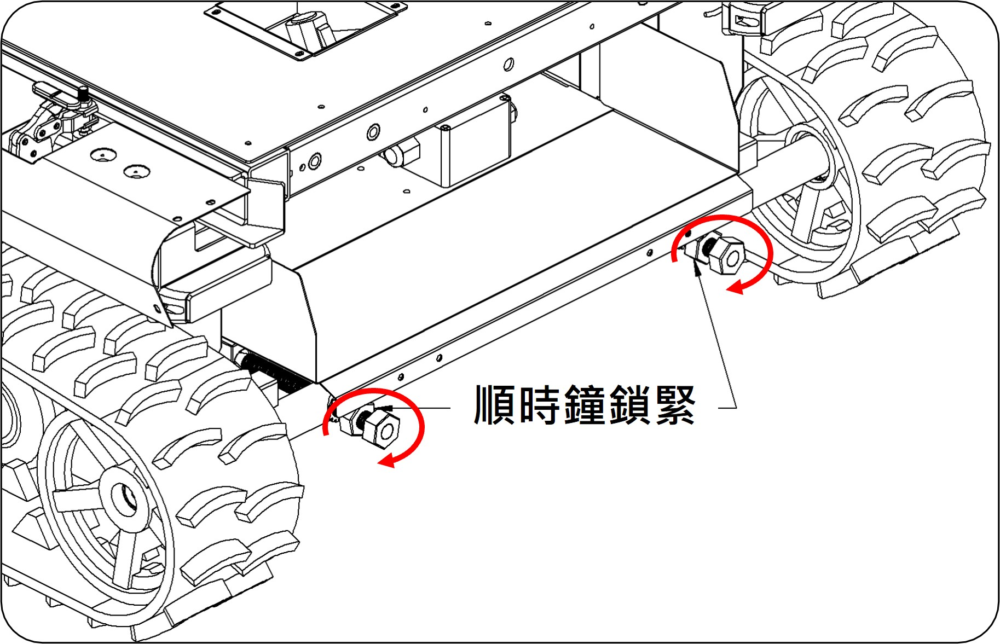
圖 12：固定螺帽鎖緊
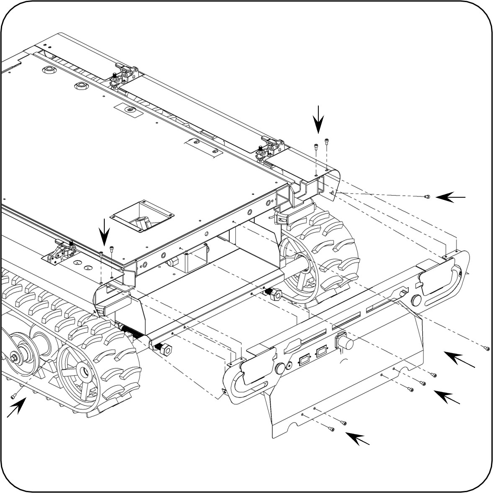
圖 13：後蓋板復原
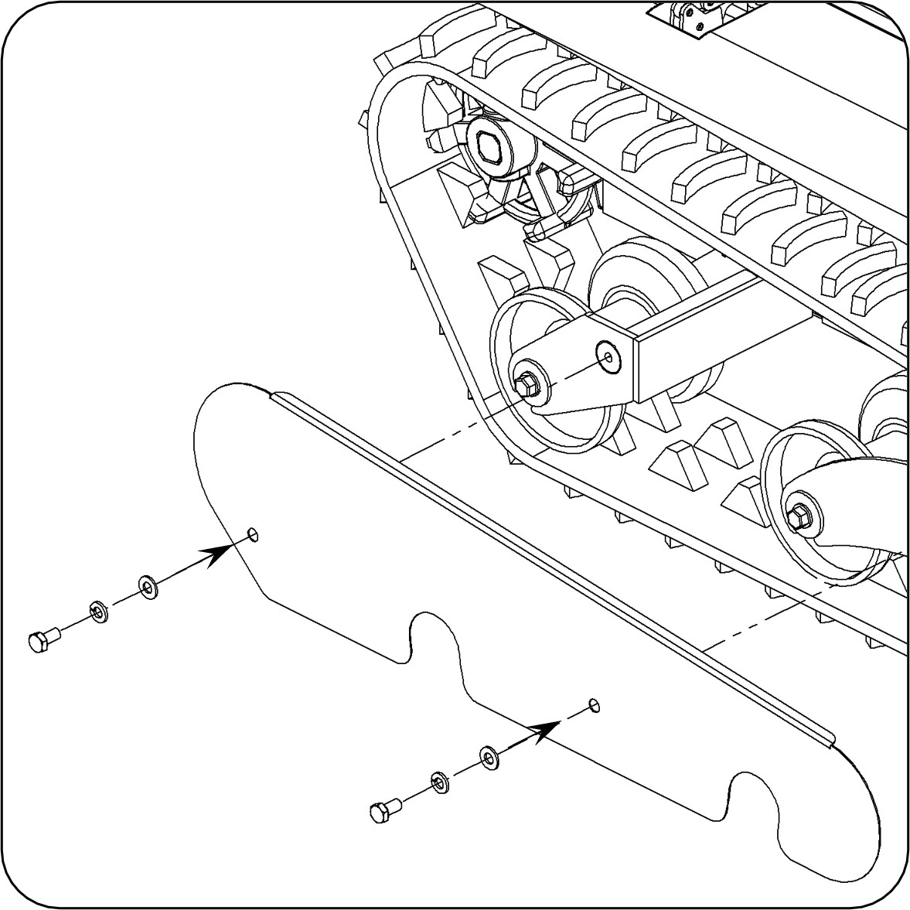
圖 14：側板復原鎖固